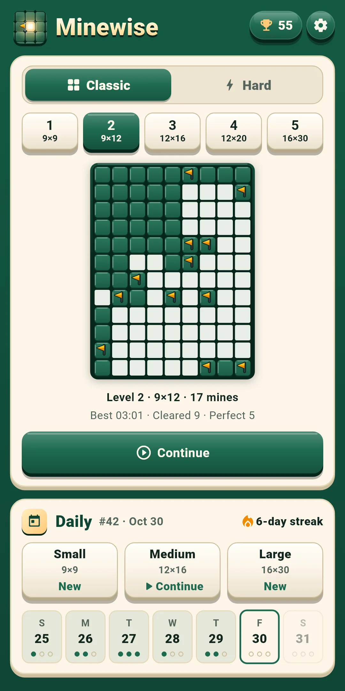
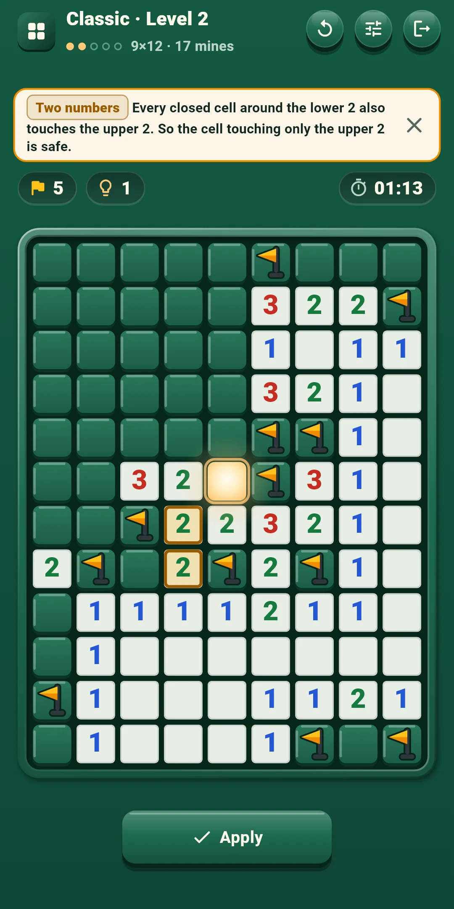
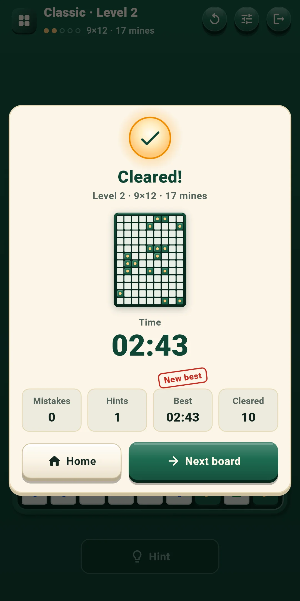
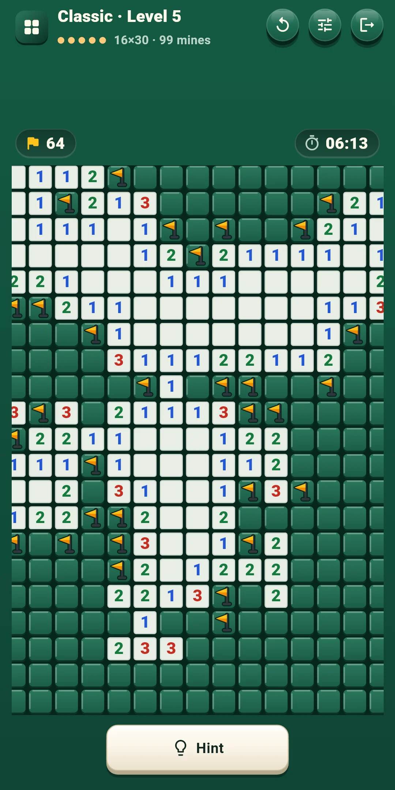
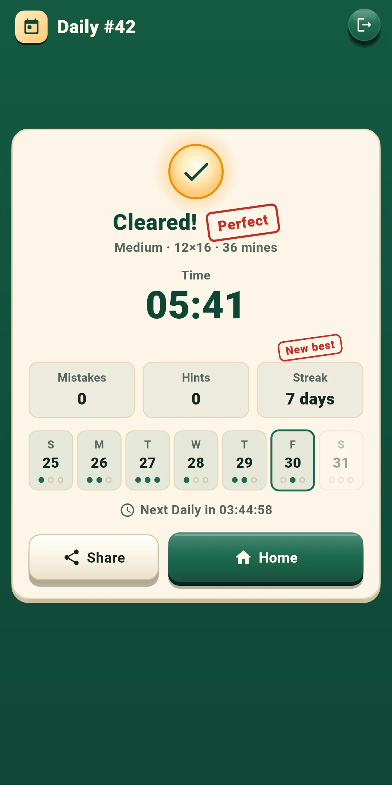
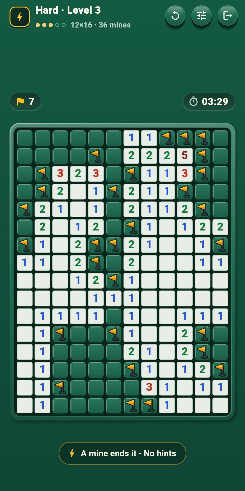
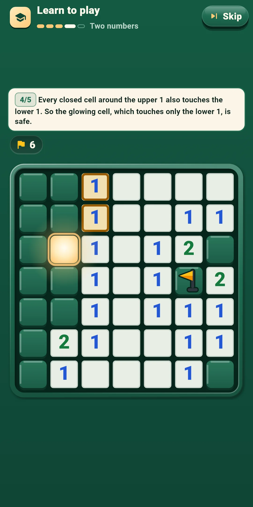

Minewise
How to Play
How to Play







| App Name | Minewise |
|---|---|
| Version | 1.0.1 |
| Developer | Willee Project |
| Platform | Android |
Minewise is a no-guess minesweeper puzzle: use the number clues to avoid the mines and open every cell that isn't one. Every board starts at a glowing start cell and can be solved from there to the end by logic alone, without guessing.
The tutorial teaches the basics on a 7×7 board in five steps: Start cell → Numbers and flags → Open around → Two numbers → On your own. At each step it highlights the numbers and mines to look at, and only the cell you should tap responds. Hints name the idea they use with a tag: One number, Two numbers, Several numbers, Mines left or Every layout. Here is what each one means.
Level 1 boards can be solved with One number and Two numbers alone. From Level 2 on, some boards also need Several numbers and Mines left. Hints show the harder ideas, with their reasons (chapter 4).
At the left of the top bar you see the mode and level (for example Classic · Level 3), and below it the level dots with the board size and mines (for example 12×16 · 36 mines). Daily shows the Daily number (#12) and the board size. The buttons at the right:
| Button | What it does |
|---|---|
| Restart (↻) | Opens a sheet where you pick Restart this board or New board (below) |
| Quick settings | Opens a sheet for changing sounds, vibration, effects, controls and board options (chapter 5) without leaving the game. Tap above the sheet or drag it down to close it |
| Exit (the door) | Goes back home. Your board is saved automatically |
The row right above the board:
The row below the board:
| Button | What it does |
|---|---|
| Hint | Tells you the next cell to open, with the reason. Unlimited (chapter 4). It can't be tapped before the start cell is open or after the board is over |
| [Open|Flag] | Shown only with control B. Chooses whether a tap opens a cell or plants a flag |
The Restart sheet:
| Choice | What happens |
|---|---|
| Restart this board | Puts the board back as it was before the start cell was opened. In Classic, the time, mistakes and hints start over; in Daily, the day's time, mistakes and hints keep counting. Greyed out until the start cell is open. Not on Hard |
| New board (Classic and Hard) | Leaves this board and gives you another one of the same level. The board you left doesn't count as cleared (see chapter 6 for Hard). Not in Daily |
The Hint button tells you the next cell to open, and why. Hints are free and unlimited (not on Hard). You can use them once the start cell is open.
You press the same button three times: Hint → Show cell → Apply.
Turn them on or off under Controls and Board in Settings. During a game, change them right away with Quick settings.
| Level | Board size | Mines |
|---|---|---|
| 1 | 9×9 | 10 |
| 2 | 9×12 | 17 |
| 3 | 12×16 | 36 |
| 4 | 12×20 | 50 |
| 5 | 16×30 | 99 |
Minewise Daily Small #12 ✅ 03:41 Mistakes 0 · Hints 1 🔥 5-day streak
#12 is the Daily number, followed by your time (minutes:seconds, or hours:minutes:seconds past an hour). 'Minewise Daily' in the first line is the same in every language, and the board size is added so people who played the same board can compare. The second line shows your mistakes and hints and the third your streak (shown from two days on). The first Daily is #1 and the number goes up by one each day, so the same number means the same boards.
Open them with the trophy button at the top right of the home screen. It shows how many boards you've cleared.
Open them with the gear at the top right of the home screen. There are four groups. During a game, the Quick settings button changes the first three right away.
| Item | What it does |
|---|---|
| Sound effects | Turns on or off the sounds for opening cells, planting and removing flags, opening around a number, hitting a mine, hints, clearing a board and the result stamps |
| Vibration | A short tap for planting a flag, a lighter one for removing it, a heavy one for hitting a mine, and a long one when you clear a board. Turns it on or off |
| Reduce effects | Turns all effects down at once. While it is on, Motion, Light and Confetti below count as off |
| Motion · Light · Confetti | Turn each effect on or off. Motion is the opening ripple, flag bounce and defusing, Light is the start-cell glow, blasts and the cleared-board glow, and Confetti is the result screen. The board never shakes |
| Item | What it does |
|---|---|
| Controls | Pick Tap · long press (the default) or [Open|Flag] buttons (chapter 3) |
| Long-press time (ms) | Pick 250, 300, 350, 400 or 500. 350 at first. Used only with Tap · long press |
| Tap a number to open around it | Opens the other cells when the flags around a number match it. On at first |
| Item | What it does |
|---|---|
| Show time | Shows the time above the board. On at first |
| Show mistakes right away | Puts an X on wrong flags right away (not on Hard). Off at first |
| Big numbers | Draws the numbers on the board bigger. Off at first |
| Item | What it does |
|---|---|
| Language | Follows your device language (the default), or pick one from the list |
| Privacy options | Opens the ad consent window again. Shown only where consent is required (such as Europe) |
| How to play | A short rules screen: goal, numbers, the glowing start cell, controls, mistakes, hints, Daily and Hard |
| Replay the tutorial | Plays the tutorial ("Learn to play") again |
| About | Version, this guide (How to play), the privacy policy and open-source licenses |